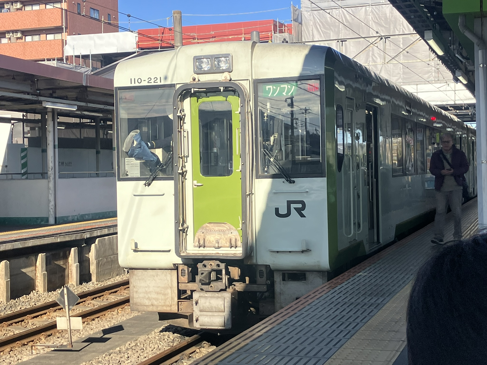

主に非電化区間となっており、ディーゼル車の2両編成となっている区間。基本的には
高麗川～高崎での区間を走行しているが、
高麗川～小川町、小川町～高崎、児玉～高崎間でも走行している。
現在は、以下の2種類の車両が走っている
停車駅は、高崎、倉賀野、北藤岡、群馬藤岡、丹荘、児玉、松久、用土、寄居、折原、竹沢、小川町、明覚、越生、毛呂、高麗川駅の16駅。
本数が少なく、基本的には約1時間に1本程度の運行になっているが、約2時間の間隔があくことがあり乗り換えのタイミングが悪いと1時間弱待つことも多くある。
しかし、停車駅は基本的に田舎にあるため、近くには何もないことが多い。
また、単線区間（線路が1本で走行）であるため、事故が一度起こると上りでも下りでも影響を受けてしまう。
ディーゼル車での走行。ディーゼル車とは、電気を使わず、軽油を燃料にして走る気動車のこと。
元々1両編成、2両編成、3両編成とあったが、2025年の3月15日からは2両編成のワンマン運転のみになった。
現在では、後述するHB-E220系が運行開始したため、キハ110系の運行本数は減少している。
キハ110系の外観
キハ110系に置き換わる形で導入され、2025年下期に運行開始をした2両編成の車両。上記のキハ110系とは異なり、ディーゼルハイブリッド式。
ディーゼルハイブリッドとは、ディーゼルエンジン発電機と蓄電池を組み合わせて走る気動車のこと。
従来に比べて、騒音や排気ガスなどが低減される。
HB-E220系の外観。旧型に比べると窓が少ない。
参照したサイト